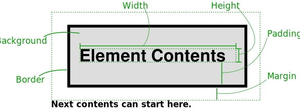
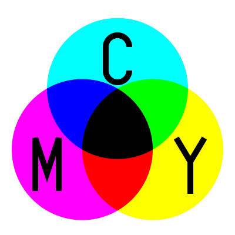
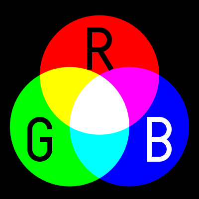
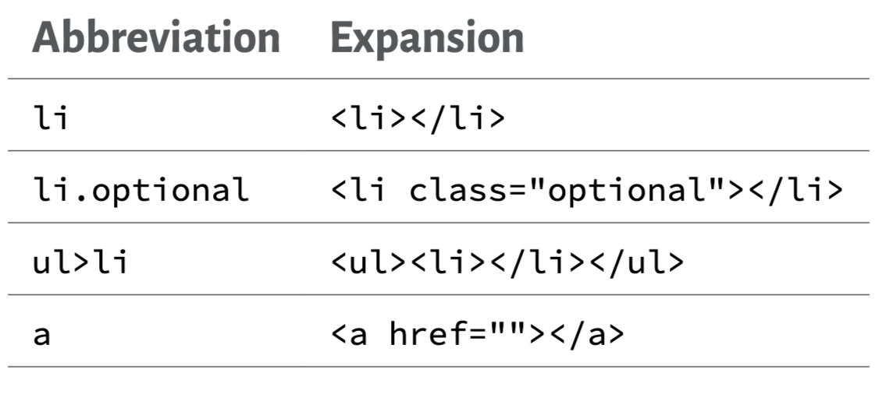

class: center, middle # Module 3 Stylesheets and CSS ??? Notes for the _first_ slide! --- # Agenda <div style="font-size: x-large;"> <p>1. CSS Basics</p> <p>2. Properties</p> <p>3. CSS Box Model</p> <p>4. CSS Units</p> <p>5. CSS Selectors</p> <p>6. Colours in CSS</p> <p>7. Browsers</p> <p>8. Development Tools</p> <p>9. HTML + CSS</p> </div> --- # <h2>Stylesheets and CSS</h2> <div style="font-size: x-large;"> <p><dfn>Cascading Style Sheets</dfn> (<dfn>CSS</dfn>) are a language for giving style information to web pages.</p> <p>That is, after creating content in HTML, we will give information about what each piece of content should look like by using CSS. Using semantic markup in HTML <em>should</em> make it possible to worry about these two things separately.</p> </div> --- # <h2>CSS Basics</h2> <div style="font-size: x-large;"> <p>CSS files are also text files, and saved with a <code class="file">.css</code> extension.</p> <p>A first example that we'll save as <code class="file">style.css</code>:</p> <pre class="highlight lang-css hljs" data-lang=".css"><span class="hljs-selector-tag">li</span> { <span class="hljs-attribute">font-style</span>: italic; <span class="hljs-attribute">color</span>: grey; }</pre> </div> --- # <h2>CSS Basics</h2> <div style="font-size: x-large;"> <p>Then in our HTML, in the <span class="hljs-tag"><</span>head>, add:</p> <pre class="highlight lang-html hljs xml" data-lang=".html"><span class="hljs-selector-tag"><</span>link <span class="hljs-attr">rel</span>=<span class="hljs-string">"stylesheet"</span> <span class="hljs-attr">href</span>=<span class="hljs-string">"style.css"</span> /></span></pre> <p>The <code class="html">href</code> is a URL to the CSS: usually a relative URL, but could be absolute.</p> <p>If we reload the HTML page, each <span class="hljs-tag"><</span>li> should change to grey, italic text.</p> </div> --- # <h2>CSS Basics</h2> <div style="font-size: x-large;"> <pre class="highlight lang-css continuation hljs" data-lang=".css"><span class="hljs-selector-tag">li</span> { <span class="hljs-attribute">font-style</span>: italic; <span class="hljs-attribute">color</span>: grey; }</pre> <h3>Parts of that CSS rule:</h3> <li><code class="css">li</code>: the <dfn>selector</dfn>. What are we changing the appearance of? </li> This selects all <span class="hljs-tag"><</span>li></code> elements. </ul> </div> --- # <h2>CSS Basics</h2> <div style="font-size: x-large;"> <pre class="highlight lang-css continuation hljs" data-lang=".css"><span class="hljs-selector-tag">li</span> { <span class="hljs-attribute">font-style</span>: italic; <span class="hljs-attribute">color</span>: grey; }</pre> <ul> <li><code class="css">font-style</code> and <code class="css">color</code>: the <dfn>property</dfn>, the thing being changed.</li> <li><code class="css">italic</code> and <code class="css">grey</code>: the <dfn>value</dfn> for the property.</li> </ul> </div> --- # <h2>CSS Basics</h2> <div style="font-size: x-large;"> <p>A CSS file can contains many rules like this, each changing different elements. Let's add another and see what happens:</p> <pre class="highlight lang-css hljs" data-lang=".css"><span class="hljs-selector-tag">h1</span> { <span class="hljs-attribute">text-decoration</span>: underline; <span class="hljs-attribute">text-align</span>: center; }</pre> </div> --- # <h2>Properties</h2> <div style="font-size: x-large;"> <p>Like with HTML, a CSS reference will be the place to go to find all selectors, properties and how they are used. But there are a few you'll likely need…</p> <aside class="links"><a href="https://developer.mozilla.org/en-US/docs/Web/CSS/Reference">CSS Reference</a></aside> </div> --- # <h2>Properties</h2> <div style="font-size: x-large;"> <p>The <code class="css">font-style</code> property can be <code class="css">italic</code> or <code class="css">normal</code>. We saw it used for <span class="hljs-tag"><</span>li>s above. Or we could change the way text is emphasized:</p> <pre class="highlight lang-css hljs" data-lang=".css"><span class="hljs-selector-tag">em</span> { <span class="hljs-attribute">font-style</span>: normal; <span class="hljs-attribute">color</span>: red; }</pre> <aside class="links"><a href="https://developer.mozilla.org/en-US/docs/Web/CSS/font-style"><code class="css">font-style</code> property</a></aside> </div> --- # <h2>Properties</h2> <div style="font-size: x-large;"> <p>The <code class="css">font-weight</code> property can be <code class="css">bold</code> or <code class="css">normal</code>. Maybe that would be a better way to present emphasis.</p> <pre class="highlight lang-css hljs" data-lang=".css"><span class="hljs-selector-tag">em</span> { <span class="hljs-attribute">font-style</span>: normal; <span class="hljs-attribute">font-weight</span>: bold; }</pre> <aside class="links"><a href="https://developer.mozilla.org/en-US/docs/Web/CSS/font-weight"><code class="css">font-weight</code> property</a></aside> </div> --- # <h2>Properties</h2> <div style="font-size: x-large;"> <p>The <code class="css">text-align</code> property is used for text justification: <code class="css">left</code>, <code class="css">right</code>, <code class="css">center</code>, <code class="css">justify</code> (for full-justification).</p> <pre class="highlight lang-css hljs" data-lang=".css"><span class="hljs-selector-tag">p</span> { <span class="hljs-attribute">text-align</span>: justify; }</pre> <aside class="links"><a href="https://developer.mozilla.org/en-US/docs/Web/CSS/text-align"><code class="css">text-align</code> property</a></aside> </div> --- # <h2>Properties</h2> <div style="font-size: x-large;"> <p>The <code class="css">color</code> property is used to set the text colour. Values can be built-in colour words (see the CSS reference) or a colour code (later).</p> <pre class="highlight lang-css hljs" data-lang=".css"><span class="hljs-selector-tag">h1</span> { <span class="hljs-attribute">color</span>: rebeccapurple; } <span class="hljs-selector-tag">h2</span> { <span class="hljs-attribute">color</span>: crimson; }</pre> <aside class="links"><a href="https://developer.mozilla.org/en-US/docs/Web/CSS/color"><code class="css">color</code> property</a></aside> <aside class="links"><a href="https://developer.mozilla.org/en-US/docs/Web/CSS/color_value">CSS colour values</a></aside> </div> --- # <h2>Properties</h2> <div style="font-size: x-large;"> <p>The <code class="css">background-color</code> property sets the colour <em>behind</em> the text.</p> <pre class="highlight lang-css hljs" data-lang=".css"><span class="hljs-selector-tag">strong</span> { <span class="hljs-attribute">font-weight</span>: normal; <span class="hljs-attribute">color</span>: white; <span class="hljs-attribute">background-color</span>: darkred; }</pre> <aside class="links"><a href="https://developer.mozilla.org/en-US/docs/Web/CSS/background-color"><code class="css">background-color</code> property</a></aside> </div> --- # <h2>Properties</h2> <div style="font-size: x-large;"> <p>The <code class="css">font-family</code> property sets the text font.</p> <p>You don't know the fonts users will have available: give a list of options and the first that's available will be used. The list <strong>must</strong> end with one of the five generic font families: every browser should have those.</p> <aside class="links"><a href="https://developer.mozilla.org/en-US/docs/Web/CSS/font-family"><code class="css">font-family</code> property</a></aside> </div> --- # <h2>Properties</h2> <div style="font-size: x-large;"> <p>I might start a stylesheet like this:</p> <pre class="highlight lang-css hljs" data-lang=".css"><span class="hljs-selector-tag">body</span> { <span class="hljs-attribute">font-family</span>: <span class="hljs-string">"Helvetica"</span>, <span class="hljs-string">"Arial"</span>, sans-serif; } <span class="hljs-selector-tag">code</span> { <span class="hljs-attribute">font-family</span>: <span class="hljs-string">"Lucida Console"</span>, <span class="hljs-string">"Monaco"</span>, monospace; }</pre> <p>This indicates: Helvetica if available, Arial of not, any sans serif font if not. Except <span class="hljs-tag"><</span>code> elements, which are in an appropriate monospace font.</p> </div> --- # <h2>Properties</h2> <div style="font-size: x-large;"> <p>The five generic font families are:</p> <ul> <li style="font-family: serif">serif: <a href="https://en.wikipedia.org/wiki/Serif">Serif in Wikipedia</a></li> <li style="font-family: sans-serif">sans-serif: no serifs</li> <li style="font-family: cursive">cursive: something curly or joined</li> <li style="font-family: fantasy">fantasy: something decorative or weird</li> <li style="font-family: monospace">monospace: every letter the same width</li> </ul> </div> --- # <h2>Properties</h2> <div style="font-size: x-large;"> <p>See something like <a href="https://www.cssfontstack.com/">cssfontstack.com</a> for collections of similar-looking fonts with good compatibility.</p> </div> --- # <h2>Properties</h2> <div style="font-size: x-large;"> <p>The <code class="css">border-style</code>, <code class="css">border-width</code>, and <code class="css">border-color</code> properties affect the border of an element: line type, line width, line colour. There is also a <code class="css">border</code> shorthand where you can set all three.</p> <aside class="links"><a href="https://developer.mozilla.org/en-US/docs/Web/CSS/border-style"><code class="css">border-style</code> property</a></aside> <aside class="links"><a href="https://developer.mozilla.org/en-US/docs/Web/CSS/border-width"><code class="css">border-width</code> property</a></aside> <aside class="links"><a href="https://developer.mozilla.org/en-US/docs/Web/CSS/border-color"><code class="css">border-color</code> property</a></aside> </div> --- # <h2>Properties</h2> <div style="font-size: x-large;"> <p>These do the same things to level 1 and 2 headings:</p> <pre class="highlight lang-css hljs" data-lang=".css"><span class="hljs-selector-tag">h1</span> { <span class="hljs-attribute">border-width</span>: thin; <span class="hljs-attribute">border-style</span>: dashed; <span class="hljs-attribute">border-color</span>: red; } <span class="hljs-selector-tag">h2</span> { <span class="hljs-attribute">border</span>: dashed thin red; }</pre> <aside class="links"><a href="https://developer.mozilla.org/en-US/docs/Web/CSS/border"><code class="css">border</code> property</a></aside> </div> --- # <h2>Properties</h2> <div style="font-size: x-large;"> <p>There are many more CSS properties.</p> <p>We will talk about a few more, and see the <a href="https://developer.mozilla.org/en-US/docs/Web/CSS/Reference">CSS reference</a> for all the details.</p> </div> --- # <h2>CSS Box Model</h2> <div style="font-size: x-large;"> <p>The way CSS <q>boxes</q> are arranged needs a little explanation. Suppose we have a <span class="hljs-tag"><</span>h2>Element Contents<span class="hljs-tag"><</span>/h2>. The parts of the layout are:</p> <figure></figure> </div> --- # <h2>CSS Box Model</h2> <div style="font-size: x-large;"> <p>An element's <dfn>padding</dfn> is inside the border/background colour. It's <dfn>margin</dfn> is outside.</p> <p>That means that the margin and padding look the same if you have no border or background: it can be tricky to figure out what's happening.</p> <p>The padding, margin, and border can be different for all four sides.</p> </div> --- # <h2>CSS Box Model</h2> <div style="font-size: x-large;"> <p>The <code class="css">width</code> and <code class="css">height</code> properties might not mean the obvious thing: I usually imagine them including the padding and border, but they don't.</p> <aside class="links"><a href="https://developer.mozilla.org/en-US/docs/Web/CSS/box-sizing"><code class="css">box-sizing</code> property</a></aside> <p>But that can be changed with the <code class="css">box-sizing</code> property, if you want to specify widths/heights including the padding and border.</p> </div> --- # <h2>CSS Box Model</h2> <div style="font-size: x-large;"> <p>Let's try some of that…</p> <pre class="highlight lang-css hljs" data-lang=".css"><span class="hljs-selector-tag">blockquote</span> { <span class="hljs-attribute">border</span>: thin solid grey; <span class="hljs-attribute">background-color</span>: silver; <span class="hljs-attribute">padding</span>: <span class="hljs-number">0.25em</span>; <span class="hljs-attribute">margin</span>: <span class="hljs-number">1em</span> <span class="hljs-number">2em</span>; }</pre> </div> --- # <h2>CSS Units</h2> <div style="font-size: x-large;"> <aside class="links"><a href="https://developer.mozilla.org/en-US/docs/Web/CSS/length">CSS length reference</a></aside> <p>There are several length units that can be used for margins, border width, font size, etc. These take a little explanation…</p> </div> --- # <h2>CSS Units</h2> <div style="font-size: x-large;"> <p>There are physical length units: <code class="css">cm</code>, <code class="css">mm</code>, <code class="css">in</code>, <code class="css">pt</code> (= 1/72 inch), etc.</p> <p>These work, but if the user zooms in or out, these also scale so no longer really match their apparent meaning.</p> <p>This has style <code class="css">width: 1in</code>. Is it one inch wide on your screen? <span style="display:inline-block;width:1in;border:thin solid black;text-align:center;padding:0;">1in</span></p> </div> --- # <h2>CSS Units</h2> <div style="font-size: x-large;"> <p>A <code class="css">px</code> is one pixel on the device's display. Except when it isn't: on high resolution displays, it <a href="http://stackoverflow.com/questions/8785643/what-exactly-is-device-pixel-ratio">might be two or three real pixels</a>. If the user zooms in/out, <code class="css">1px</code> will be larger/smaller.</p> <p>Specifying <code class="css">px</code> can be useful if you're leaving space for an image, which is inherently pixel-sized.</p> </div> --- # <h2>CSS Units</h2> <div style="font-size: x-large;"> <p>The <code class="css">vh</code> and <code class="css">vw</code> units are 1% of the height and width of the <q>viewport</q>: the part of the window where the <span class="hljs-tag"><</span>body> is displayed.</p> <p>Useful occasionally if you want to size things relative to the window: one element <code class="css">width: 25vw</code> and another <code class="css">width: 75vw</code>.</p> </div> --- # <h2>CSS Units</h2> <div style="font-size: x-large;"> <p>One <code class="css">em</code> is the font size of the element you're changing.</p> <p>One <code class="css">rem</code> is font size of the <span class="hljs-tag"><</span>html>. This doesn't change if you're talking about <span class="hljs-tag"><</span>p> or <span class="hljs-tag"><</span>h1> or <span class="hljs-tag"><</span>h2></p> <p>These scale sensibly and makes sense on different sized displays, and say what they mean.</p> </div> --- # <h2>CSS Units</h2> <div style="font-size: x-large;"> <p>Result: <code class="css">em</code> is usually my first choice for any length.</p> <p>Maybe <code class="css">rem</code> for something that applies to many different things, or <code class="css">px</code> for image-sized boxes.</p> </div> --- # <h2>CSS Selectors</h2> <div style="font-size: x-large;"> <p>So far, we have only selected (all instances of) tags: the CSS selector <code class="css">abbr</code> affects <em>all</em> <span class="hljs-tag"><</span>abbr>s on the page.</p> <aside class="links"><a href="https://developer.mozilla.org/en-US/docs/Web/CSS/CSS_Selectors">CSS Selectors reference</a></aside> </div> --- # <h2>CSS Selectors</h2> <div style="font-size: x-large;"> <p>We can select by <code class="html">class</code> with a period. These select any <span class="hljs-tag"><</span>span class="quantity"> and any tag with <code class="html">class="optional"</code>:</p> <pre class="highlight lang-css hljs" data-lang=".css"><span class="hljs-selector-tag">span</span><span class="hljs-selector-class">.quantity</span> { <span class="hljs-attribute">font-weight</span>: bold; } <span class="hljs-selector-class">.optional</span> { <span class="hljs-attribute">font-style</span>: italic; <span class="hljs-attribute">color</span>: grey; }</pre> </div> --- # <h2>CSS Selectors</h2> <div style="font-size: x-large;"> <p>We can also select by <code class="html">id</code> with a <code class="css">#</code>. For example, this will change all <span class="hljs-tag"><</span>p id="servings"></code> and anything with <code class="html">id="first"</code>:</p> <pre class="highlight lang-css hljs" data-lang=".css"><span class="hljs-selector-tag">p</span><span class="hljs-selector-id">#servings</span> { <span class="hljs-attribute">color</span>: red; } <span class="hljs-selector-id">#first</span> { <span class="hljs-attribute">font-size</span>: larger; }</pre> </div> --- # <h2>CSS Selectors</h2> <div style="font-size: x-large;"> <p>The class and id selectors give us much more flexibility in formatting our page.</p> <p>If you want some <span class="hljs-tag"><</span>p> (for example) to be visually different, first decide why and give a meaningful class or id. Then select by class/id in your CSS and make the change.</p> <p>We can keep semantically-meaningful markup but actually get everything looking the way we want.</p> </div> --- # <h2>CSS Selectors</h2> <div style="font-size: x-large;"> <p>We can be even more specific in what we select, without having to add <code class="html">class</code> or <code class="html">id</code> values.</p> <p>It's possible to select either one tag anywhere inside another (<dfn>descendant</dfn>) or a tag <em>directly</em> inside another (<dfn>child</dfn>).</p> </div> --- # <h2>CSS Selectors</h2> <div style="font-size: x-large;"> <p>The descendant selector is a space. This changes <span class="hljs-tag"><</span>em> if they're inside an <span class="hljs-tag"><</span>h2>:</p> <pre class="highlight lang-css hljs" data-lang=".css"><span class="hljs-selector-tag">h2</span> <span class="hljs-selector-tag">em</span> { <span class="hljs-attribute">font-style</span>: normal; <span class="hljs-attribute">text-decoration</span>: underline; <span class="hljs-attribute">background-color</span>: silver; }</pre> <p>This would change <strong>both</strong> words <q>Selectors</q> here:</p> <pre class="highlight lang-html hljs xml" data-lang=".html"> <span class="hljs-tag"><<span class="hljs-name">h2</span>></span>Example <span class="hljs-tag"><<span class="hljs-name">em</span>></span>Selectors<span class="hljs-tag"><</span><span class="hljs-name">/em</span>></span><span class="hljs-tag"><</span><span class="hljs-name">/h2</span>></span> <span class="hljs-tag"><<span class="hljs-name">h2</span>></span>Example <span class="hljs-tag"><<span class="hljs-name">a</span> <span class="hljs-attr">href</span>=<span class="hljs-string">"…"</span>></span><span class="hljs-tag"><<span class="hljs-name">em</span>></span>Selectors<span class="hljs-tag"><</span><span class="hljs-name">/em</span>><span class="hljs-tag"><</span><span class="hljs-name">/a</span>></span><span class="hljs-tag"><</span><span class="hljs-name">/h2</span>></span> </pre> </div> --- # <h2>CSS Selectors</h2> <div style="font-size: x-large;"> <p>The child selector is a greater-than: <code class="css">></code>, like this:</p> <pre class="highlight lang-css hljs" data-lang=".css"><span class="hljs-selector-tag">h2</span>><span class="hljs-selector-tag">em</span> { <span class="hljs-attribute">color</span>: red; }</pre> <p>That would select <strong>only the first</strong> word <q>Selectors</q>, because the second <span class="hljs-tag"><</span>em> is immediately inside <span class="hljs-tag"><</span>a>, not <span class="hljs-tag"><</span>h2>.</p> <pre class="highlight lang-html hljs xml" data-lang=".html"> <span class="hljs-tag"><<span class="hljs-name">h2</span>></span>Example <span class="hljs-tag"><<span class="hljs-name">em</span>></span>Selectors<span class="hljs-tag"><</span><span class="hljs-name">/em</span>></span><span class="hljs-tag"><</span><span class="hljs-name">/h2</span>></span> <span class="hljs-tag"><<span class="hljs-name">h2</span>></span>Example <span class="hljs-tag"><<span class="hljs-name">a</span> <span class="hljs-attr">href</span>=<span class="hljs-string">"…"</span>></span><span class="hljs-tag"><<span class="hljs-name">em</span>></span>Selectors<span class="hljs-tag"><</span><span class="hljs-name">/em</span>><span class="hljs-tag"><</span><span class="hljs-name">/a</span>></span><span class="hljs-tag"><</span><span class="hljs-name">/h2</span>></span> </pre> </div> --- # <h2>CSS Selectors</h2> <div style="font-size: x-large;"> <p>The child selector can be useful when you want be specific about the structure around the thing you're selecting. For example, changing the bullets for unordered lists:</p> <pre class="highlight lang-css hljs" data-lang=".css"><span class="hljs-selector-tag">ul</span>><span class="hljs-selector-tag">li</span> { <span class="hljs-attribute">list-style-type</span>: square; }</pre> </div> --- # <h2>CSS Selectors</h2> <div style="font-size: x-large;"> <p>That CSS (selecting <q><code class="css">ul>li</code></q>) will correctly change only the <span class="hljs-tag"><</span>ul>, not the <span class="hljs-tag"><</span>ol> that happens to be inside it.</p> <pre class="highlight lang-html hljs xml" data-lang=".html"> <span class="hljs-tag"><<span class="hljs-name">ul</span>></span> <span class="hljs-tag"><<span class="hljs-name">li</span>></span> List item with an ordered list. <span class="hljs-tag"><<span class="hljs-name">ol</span>></span><span class="hljs-tag"><<span class="hljs-name">li</span>></span>one<span class="hljs-tag"><<span class="hljs-name">/li</span>></span><span class="hljs-tag"><<span class="hljs-name">li</span>></span>two<span class="hljs-tag"><<span class="hljs-name">/li</span>></span><span class="hljs-tag"><<span class="hljs-name">/ol</span>></span> <span class="hljs-tag"><<span class="hljs-name">/li</span>></span> <span class="hljs-tag"><<span class="hljs-name">/ul</span>></span></pre> <p>Selecting <q><code class="css">ul li</code></q> would change both.</p> </div> --- # <h2>CSS Selectors</h2> <div style="font-size: x-large;"> <p>There are also <dfn>pseudo-class</dfn> selectors, which target elements in a particular state that the browser can figure out for us.</p> <p>e.g. different background colour for every other table row (<span class="hljs-tag"><</span>tr>): zebra stripes.</p> <pre class="highlight lang-css hljs" data-lang=".css"><span class="hljs-selector-tag">tr</span><span class="hljs-selector-pseudo">:nth-child(even)</span> { <span class="hljs-attribute">background-color</span>: white; } <span class="hljs-selector-tag">tr</span><span class="hljs-selector-pseudo">:nth-child(odd)</span> { <span class="hljs-attribute">background-color</span>: silver; }</pre> <aside class="links"><a href="https://developer.mozilla.org/en-US/docs/Web/CSS/Pseudo-classes">Pseudo-classes reference</a></aside> </div> --- # <h2>CSS Selectors</h2> <div style="font-size: x-large;"> <p>e.g. these four for links, depending on their state:</p> <pre class="highlight lang-css hljs" data-lang=".css"><span class="hljs-selector-tag">a</span><span class="hljs-selector-pseudo">:link</span> { <span class="hljs-attribute">color</span>: blue; } <span class="hljs-selector-tag">a</span><span class="hljs-selector-pseudo">:visited</span> { <span class="hljs-attribute">color</span>: purple; } <span class="hljs-selector-tag">a</span><span class="hljs-selector-pseudo">:active</span> { <span class="hljs-attribute">color</span>: red; } <span class="hljs-selector-tag">a</span><span class="hljs-selector-pseudo">:hover</span> { <span class="hljs-attribute">color</span>: darkblue; }</pre> </div> --- # <h2>CSS Selectors</h2> <div style="font-size: x-large;"> <p>Also, <dfn>pseudo-elements</dfn>, which are parts of the page the browser can automatically identify and we can modify, almost like a <span class="hljs-tag"><</span>span> or something was magically inserted.</p> <p>e.g. target just the text on the first line of a paragraph:</p> <pre class="highlight lang-css hljs" data-lang=".css"><span class="hljs-selector-tag">p</span><span class="hljs-selector-pseudo">::first-line</span> { <span class="hljs-attribute">font-variant</span>: small-caps; }</pre> <aside class="links"><a href="https://developer.mozilla.org/en-US/docs/Web/CSS/Pseudo-elements">Pseudo-elements reference</a></aside> </div> --- # <h2>CSS Selectors</h2> <div style="font-size: x-large;"> <p>Or only the first line of the first paragraph (within the <span class="hljs-tag"><</span>body> or a <span class="hljs-tag"><</span>section>):</p> <pre class="highlight lang-css hljs" data-lang=".css"><span class="hljs-selector-tag">p</span><span class="hljs-selector-pseudo">:first-of-type</span><span class="hljs-selector-pseudo">::first-line</span> { <span class="hljs-attribute">font-variant</span>: small-caps; }</pre> <p>Or only the first line in the first paragraph of a top-level section:</p> <pre class="highlight lang-css hljs" data-lang=".css"><span class="hljs-selector-tag">body</span>><span class="hljs-selector-tag">section</span>><span class="hljs-selector-tag">p</span><span class="hljs-selector-pseudo">:first-of-type</span><span class="hljs-selector-pseudo">::first-line</span> { <span class="hljs-attribute">font-variant</span>: small-caps; }</pre> </div> --- # <h2>Colours in CSS</h2> <div style="font-size: x-large;"> <p>We have seen a few places we can give a colour in CSS: <code class="css">color</code>, <code class="css">background-color</code>, <code class="css">border-color</code>. The colour words are easy, but limited.</p> <p>Colours can also be specified numerically…</p> </div> --- # <h2>Colours in CSS</h2> <div style="font-size: x-large;"> <p>You may be most used to mixing colours in paint or pigments.</p> <p>These use the <dfn>CYM</dfn> or <dfn>subtractive colour model</dfn>. The primary colours are cyan, yellow, and magenta (but your kindergarten teacher might have called them blue, yellow, and red).</p> </div> --- # <h2>Colours in CSS</h2> <div style="font-size: x-large;"> <p>Subtractive colours start with white, and light is <em>subtracted</em> from there to get the colour you want. <cite class="inline"><a href="https://commons.wikimedia.org/wiki/File:SubtractiveColor.svg">image from WikiMedia Commons</a></cite></p> <figure></figure> </div> --- # <h2>Colours in CSS</h2> <div style="font-size: x-large;"> <p>But colours on computer screens have different rules. They start with black and add light to brighten: the <dfn>RGB</dfn> or the <dfn>additive colour model</dfn>.</p> </div> --- # <h2>Colours in CSS</h2> <div style="font-size: x-large;"> <p>With additive colours, the primary colours are red, green, and blue. <cite class="inline"><a href="https://commons.wikimedia.org/wiki/File:AdditiveColor.svg">image from WikiMedia Commons</a></cite></p> <figure></figure> </div> --- # <h2>Colours in CSS</h2> <div style="font-size: x-large;"> <aside class="links"><a href="https://www.youtube.com/watch?v=HauiF_AQUIY&feature=youtu.be">Why you can't take a good picture of a rainbow</a>: about RGB and perception</aside> <p>Colours in CSS are (usually) specified with RGB colour. We are essentially directly indicating how the display should illuminate: how much of red/green/blue light should be added to the (black) screen.</p> </div> --- # <h2>Colours in CSS</h2> <div style="font-size: x-large;"> <p>Each of the R, G, and B values is specified on this scale, from darkest (<code class="css">0</code>) to lightest (<code class="css">f</code>):</p> <blockquote><code class="css">0</code>, <code class="css">1</code>, <code class="css">2</code>, <code class="css">3</code>, <code class="css">4</code>, <code class="css">5</code>, <code class="css">6</code>, <code class="css">7</code>, <code class="css">8</code>, <code class="css">9</code>, <code class="css">a</code>, <code class="css">b</code>, <code class="css">c</code>, <code class="css">d</code>, <code class="css">e</code>, <code class="css">f</code></blockquote> <p>Give the primary colour levels in RGB order, starting with a <code class="css">#</code>, so <code class="css">#000</code> is the darkest-possible colour: black.</p> </div> --- # <h2>Colours in CSS</h2> <div style="font-size: x-large;"> <p>Some basics:</p> <ul style="font-size: x-large;"> <li><code class="css">#000</code>: black <code class="css"><span class="coloursample nobr" style="background-color: #000; color: #fff; border-style: solid;">#000</span></code></li> <li><code class="css">#f00</code>: red <code class="css"><span class="coloursample nobr" style="background-color: #f00; color: #fff; border-style: solid;">#f00</span></code></li> <li><code class="css">#0f0</code>: green <code class="css"><span class="coloursample nobr" style="background-color: #0f0; color: #000; border-style: solid;">#0f0</span></code></li> <li><code class="css">#00f</code>: blue <code class="css"><span class="coloursample nobr" style="background-color: #00f; color: #fff; border-style: solid;">#00f</span></code></li> <li><code class="css">#fff</code>: white <code class="css"><span class="coloursample nobr" style="background-color: #fff; color: #000; border-style: solid;">#fff</span></code></li> </ul> </div> --- # <h2>Colours in CSS</h2> <div style="font-size: x-large;"> <p>We can use the <code class="css">0</code> to <code class="css">f</code> scale to blend colours together.</p> <p>e.g. part way between black (<code class="css">#000</code>) and red (<code class="css">#f00</code>) is <code class="css">#800</code>. Probably dark red. <code class="css"><span class="coloursample nobr" style="background-color: #800; color: #fff;">#800</span></code></p> <p>e.g. between blue (<code class="css">#00f</code>) and white (<code class="css">#fff</code>) is <code class="css">#aaf</code>. Probably light blue. <code class="css"><span class="coloursample nobr" style="background-color: #aaf; color: #000;">#aaf</span></code></p> </div> --- # <h2>Colours in CSS</h2> <div style="font-size: x-large;"> <p>Try the <a href="https://www.cs.sfu.ca/CC/165/common/study-guide/content/css-mixer.html">Interactive Colour Mixer</a> in the Study Guide, or maybe <a href="http://colorizer.org/">Colorizer</a> to experiment with how the colour codes afffect what you see.</p> </div> --- # <h2>Colours in CSS</h2> <div style="font-size: x-large;"> <p>The secondary RGB colours (combinations of the primaries) might not be obvious.</p> <ul style="font-size: x-large;"> <li><p><code class="css">#0ff</code>: green + blue = cyan. <code class="css"><span class="coloursample nobr" style="background-color: #0ff; color: #000; border-style: solid;">#0ff</span></code></p></li> <li><p><code class="css">#f0f</code>: red + blue = magenta. <code class="css"><span class="coloursample nobr" style="background-color: #f0f; color: #000; border-style: solid;">#f0f</span></code></p></li> <li><p><code class="css">#ff0</code>: red + green = yellow. <code class="css"><span class="coloursample nobr" style="background-color: #ff0; color: #000; border-style: solid;">#ff0</span></code></p></li> </ul> </div> --- # <h2>Colours in CSS</h2> <div style="font-size: x-large;"> <p style="font-size: x-large;">But if you know the secondary colours, mixing makes some sense again.</p> <p style="font-size: x-large;">e.g. orange is probably between red (<code class="css">#f00</code>) and yellow (<code class="css">#ff0</code>). Guess (<code class="css">#f70</code>). <code class="css"><span class="coloursample nobr" style="background-color: #f70; color: #000; border-style: solid;">#f70</span></code></p> </div> --- # <h2>Colours in CSS</h2> <div style="font-size: x-large;"> <p>You may see six-character colour codes in CSS as well, like <code class="css">#f7c308</code>. Either style can be used anywhere a colour value is required.</p> <p>To convert a three-character colour to six, double the characters: <code class="css">#f40</code> = <code class="css">#ff4400</code>.</p> <blockquote><code class="css"><span class="coloursample nobr" style="background-color: #f40; color: #000; border-style: solid;">#f40</span></code> <code class="css"><span class="coloursample nobr" style="background-color: #ff4400; color: #000; border-style: solid;">#ff4400</span></code></blockquote> </div> --- # <h2>Colours in CSS</h2> <div style="font-size: x-large;"> <p>To convert six to three (approximately), take the first character of each pair: <code class="css">#<mark>f</mark>7<mark>c</mark>3<mark>0</mark>8</code> ≈ <code class="css">#fc0</code>.</p> <blockquote><code class="css"><span class="coloursample nobr" style="background-color: #f7c308; color: #000; border-style: solid;">#f7c308</span></code> <code class="css"><span class="coloursample nobr" style="background-color: #fc0; color: #000; border-style: solid;">#fc0</span></code></blockquote> </div> --- # <h2>Colours in CSS</h2> <div style="font-size: x-large;"> <p>You can use other colour notations as well: see the <a href="https://developer.mozilla.org/en-US/docs/Web/CSS/color_value">CSS colour reference</a> for details.</p> <blockquote> <code class="css"><span class="coloursample nobr" style="background-color: hsl(120, 100%, 40%); color: #fff; border-style: solid;">hsl(120, 100%, 40%)</span></code> <code class="css"><span class="coloursample nobr" style="background-color: hsl(120, 100%, 80%); color: #000; border-style: solid;">hsl(120, 100%, 80%)</span></code><br/> <code class="css"><span class="coloursample nobr" style="background-color: salmon; color: #000; border-style: solid;">salmon</span></code> <code class="css"><span class="coloursample nobr" style="background-color: lightseagreen; color: #000; border-style: solid;">lightseagreen</span></code> <code class="css"><span class="coloursample nobr" style="background-color: rgb(178, 133, 224); color: #000; border-style: solid;">rgb(178, 133, 224)</span></code> </blockquote> </div> --- # <h2>Browser Compatibility</h2> <div style="font-size: x-large;"> <p>Remember that the HTML + CSS that you create is sent to the web browser of whoever views your page. Their browser is responsible for displaying it.</p> <p>How will it do that? It can be hard to know.</p> </div> --- # <h2>Browser Compatibility</h2> <div style="font-size: x-large;"> <p>We need some way to ensure that our pages will look okay everywhere, including different browsers (including older browsers), screen sizes, operating systems, etc.</p> </div> --- # <h2>Browser Compatibility</h2> <div style="font-size: x-large;"> <p>First, follow the rules: HTML and CSS were designed with this in mind.</p> <p>Create valid HTML and CSS so it will be understood everywhere.</p> <p>Use the built-in compatibility features, like generic fonts for <code class="css">font-family</code>.</p> </div> --- # <h2>Browser Compatibility</h2> <div style="font-size: x-large;"> <p>HTML features are well supported, but there can also be differences in the way browsers handle CSS properties. Good references have info on what works in what browser versions.</p> <p>e.g. <code class="css">font-style</code> was an original CSS property and works in every browser.</p> <p>e.g. <code class="css">grid</code> (and friends) weren't supported in IE/Edge until Edge version 16 (late 2017).</p> </div> --- # <h2>Browser Compatibility</h2> <aside class="links"><a href="https://caniuse.com/">Can I Use?</a></aside> <aside class="links"><a href="https://developer.mozilla.org/en-US/docs/Web/CSS/grid"><code class="css">grid</code> property</a></aside> <div style="font-size: x-large;"> <p>Can you use the <code class="css">grid</code> properties in CSS? It depends on your audience and how much compatibility you want to ensure.</p> <p>It has 94% compatibility on <code class="url">caniuse.com</code>: is that enough? If using it makes your site prettier, I'd say okay. If it's necessary for it to be usable, I might say no.</p> </div> --- # <h2>Browser Compatibility</h2> <div style="font-size: x-large;"> <p>The lesson: if discovering CSS properties, you have to have a quick look at the compatibility table in the reference to decide if they're <em>really</em> usable.</p> </div> --- # <h2>Browser Styles</h2> <p>As you work with CSS, you will start to notice differences in the default styles between browsers.</p> <p>e.g. Is the size of the <span class="hljs-tag"><</span>h2> font the same in all browsers? Are you sure?</p> <p>There are a couple of ways to deal with this so you get a consistent appearance everywhere…</p> --- # <h2>Browser Styles</h2> <div style="font-size: x-large;"> <p>A <dfn>reset stylesheet</dfn> will clear <strong>all</strong> of the browser's default style rules: no more <span class="hljs-tag"><</span>em> is italics, <span class="hljs-tag"><</span>h2> is a larger font, etc.</p> <aside class="links"><a href="https://meyerweb.com/eric/tools/css/reset/">Eric Meyer's Reset CSS</a></aside> <p>Once you have a consistent <q>nothing styled</q> stylesheet to start with, you can build from there.</p> </div> --- # <h2>Browser Styles</h2> <p>You will probably start with the reset CSS (in a separate file) and then add your own from there:</p> <pre class="highlight lang-html hljs xml" data-lang=".html"><span class="hljs-tag"><<span class="hljs-name">link</span> <span class="hljs-attr">rel</span>=<span class="hljs-string">"stylesheet"</span> <span class="hljs-attr">href</span>=<span class="hljs-string">"reset.css"</span> /></span> <span class="hljs-tag"><<span class="hljs-name">link</span> <span class="hljs-attr">rel</span>=<span class="hljs-string">"stylesheet"</span> <span class="hljs-attr">href</span>=<span class="hljs-string">"my_style.css"</span> /></span></pre> <p>In <code class="file">my_style.css</code>, you might have rules like:</p> <pre class="highlight lang-css hljs" data-lang=".css"><span class="hljs-selector-tag">h2</span> { <span class="hljs-attribute">font-size</span>: <span class="hljs-number">1.5em</span>; <span class="hljs-attribute">font-weight</span>: bold; } <span class="hljs-selector-tag">em</span> { <span class="hljs-attribute">font-style</span>: italic; }</pre> --- # <h2>Browser Styles</h2> <div style="font-size: x-large;"> <p>My experience: working with a reset CSS is tedious: you have to specify that <span class="hljs-tag"><</span>ul> is a bulleted list, <span class="hljs-tag"><</span>a> has an underline, <span class="hljs-tag"><</span>code> is monospaced, and dozens of others.</p> <p>But it's kind of nice to think about these things: did you <em>really</em> want <span class="hljs-tag"><</span>em> to be italics, or is there something better for your site?</p> </div> --- # <h2>Browser Styles</h2> <div style="font-size: x-large;"> <p>The other option for getting a consistent starting point is to let somebody else specify every property that might be different between browsers.</p> <p>That's the strategy of <a href="https://necolas.github.io/normalize.css/">Normalize.css</a>: specify every inconsistent CSS setting in browser default styles, so they end up being the same everywhere.</p> <p>Using <code class="file">normalize.css</code> and adding your own style is probably easier than a full reset.</p> </div> --- # <h2>Different Browsers</h2> <div style="font-size: x-large;"> <p>All of these tools are good, but are no substitute for actually testing your site in different situations and seeing how it works.</p> </div> --- # <h2>Different Browsers</h2> <div style="font-size: x-large;"> <p>Bare minimum must-do: resize your browser window. Different people have different screen/window sizes. Of course, your site should adapt to them well (within reason).</p> <p>Shrinking your browser window until it's about the size of phone screen isn't exactly the same as seeing it on a phone, but it's a good first step.</p> </div> --- # <h2>Different Browsers</h2> <div style="font-size: x-large;"> <p>Try different browsers: Firefox, Chrome, IE/Edge. They are <em>mostly</em> compatible, but the occasional difference can cause problems.</p> <aside class="links"><a href="http://gs.statcounter.com/platform-market-share/desktop-mobile/worldwide">StatCounter Desktop vs Mobile</a></aside> <p>Try a mobile device. You're probably developing (and therefore, usually testing) on a full-sized screen, but a lot of your viewers will be on phones.</p> </div> --- # <h2>Different Browsers</h2> <div style="font-size: x-large;"> <p>You can't be <em>completely</em> sure what will happen if somebody comes along with an old browser version, limited font availability, and a huge display, but you can do your best to make sure different situations will be okay.</p> </div> --- # <h2>Development Tools</h2> <div style="font-size: x-large;"> <p>When your HTML and CSS get complicated, it can get tricky to figure out how the parts of your page fit together.</p> <p>Web browsers give us a bunch of tools to help. [They are roughly the same in Firefox and Chrome: everything here should be more-or-less the same in both.]</p> </div> --- # <h2>Development Tools</h2> <div style="font-size: x-large;"> <p>The most direct way to see the page you're looking at: you can view the HTML source. Press <kbd style="border-style: solid;">control-U</kbd> or <kbd style="border-style: solid;">⌥⌘U</kbd> or right-click and select <q>View Page Source</q>.</p> <p>This shows you the HTML that was sent from the server, not any modifications made by JavaScript after that. [We will see that happen later in the course.]</p> </div> --- # <h2>Development Tools</h2> <div style="font-size: x-large;"> <p>Much more powerful: the browser's developer tools. Press <kbd style="border-style: solid;">F12</kbd> or <kbd style="border-style: solid;">control-shift-I</kbd> or <kbd style="border-style: solid;">⌥⌘I</kbd>.</p> </div> --- # <h2>Development Tools</h2> <div style="font-size: x-large;"> <p>In the <q>Inspector</q> tab, you can explore the page, its elements, and how they fit together.</p> <p>To the right, the <q>Rules</q> or <q>Styles</q> tab shows the CSS rules that actually apply to that element, and which file they're from.</p> </div> --- # <h2>Development Tools</h2> <div style="font-size: x-large;"> <p>You can disable/enable specific CSS rules by clicking, or edit to experiment. These aren't saved (reloading the page reverts everything), but you can easily try a few changes out to see if you like them.</p> <p>In the <q>Layout</q>/<q>Box Model</q> tab, you can see the element's box model layout after everything was computed (in pixels, because that's what the browser is actually putting on the screen).</p> </div> --- # <h2>Development Tools</h2> <div style="font-size: x-large;"> <p>Also, in the <q>Network</q> tab, you can see details of what HTML and CSS (and images and any other resources) got loaded.</p> <p>You can see the time everything took, and start to diagnose slow pages. The total time should probably be a few seconds at most.</p> </div> --- # <h2>Development Tools</h2> <div style="font-size: x-large;"> <p>One more tool worth knowing about: <a href="https://emmet.io/">Emmet</a>, which is a plug-in for many text editors.</p> <p>The idea: you type a CSS selector (like <q><code class="css">p</code></q>), press the Emmet hot-key (<kbd style="border-style: solid;">Tab</kbd> in my editor), and it replaces it with the corresponding HTML (like <q><span class="hljs-tag"><</span>p><span class="hljs-tag"><</span>/p></q>).</p> </div> --- # <h2>Development Tools</h2> <div style="font-size: x-large;"> <p>It's a great way to save keystrokes.</p>  </div> --- # <h2>HTML + CSS: Review</h2> <p style="font-size: x-large;">We have now worked with two languages for two distinct purposes…</p> --- # <h2>HTML + CSS: Review</h2> <div style="font-size: x-large;"> <p>HTML for content: here, we worry about the meaning/purpose/role of each piece of content, not the way it looks (semantics) and choose tags with that in mind.</p> <p>We can use the <code class="html">class</code> or <code class="html">id</code> attributes (with meaningful values) to fine-tune the meaning of tags if necessary. If no other HTML tag matches our content, we can use <span class="hljs-tag"><</span>div> or <span class="hljs-tag"><</span>span> and a <code class="html">class</code>/<code class="html">id</code>.</p> </div> --- # <h2>HTML + CSS: Review</h2> <div style="font-size: x-large;"> <p>And we have CSS for appearance. We can modify the way elements look on our pages: keep appearance-related stuff in the CSS: don't let it leak into your HTML.</p> <p>That might include going back to the HTML and adding some (meaningful) <code class="html">class</code>/<code class="html">id</code> attributes so we can be more specific.</p> </div> --- # <h2>HTML + CSS: Review</h2> <div style="font-size: x-large;"> <p>We will be adding a third language next: JavaScript for behaviour. Again, this will be a separate language (in a separate file) for the distinct role.</p> </div> --- # <h2>HTML + CSS: Review</h2> <div style="font-size: x-large;"> <p>Why are we separating these?</p> <p>It's easier to work on content and design separately. Those might be handled by different people, or by you at different times. We can also modify the appearance of all pages in a site by fiddling with one CSS file.</p> </div> --- # <h2>HTML + CSS: Review</h2> <div style="font-size: x-large;"> <p>We could also create different CSS for different situations.</p> <p>e.g. separate rules for small screens where we want to organize the information differently; or separate rules for print vs screen display; or slides vs printable corse notes.</p> <p>e.g. we could take the same (HTML) content and re-purpose it into an e-book (with some additional work).</p> </div> --- # Q & A